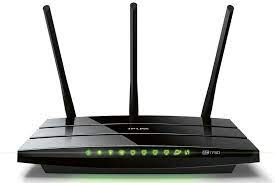

Ruoter (Routeador)
Es un dispositivo de Networking que se diferencia del resto por tener la capacidad de interconectar las redes internas y externas. La arquitectura del Router está formada por una CPU, Memorias, Bus de Sistema, y distintas interfaces de entrada y salida, similar a la de una PC convencional.

Función Principal del Router:
Conocer las redes de otros dispositivos de este tipo, filtrar el tráfico en función de la información de capa de red del modelo OSI, determinar la mejor ruta para alcanzar la red de destino y reenviar el tráfico hacia la interfaz correspondiente.
Direccionamiento de Red en el protocolo IP. A nivel de red necesitamos un direccionamiento más sofisticado que nos permita localizar un ordenador sin mayor dificultad. Algo parecido al direccionamiento es, por ejemplo, cuando navegamos por internet. También, otro ejemplo se da a un cartero, que conoce el nombre de la calle y el número de casa al que va dirigido el mensaje o la carta.